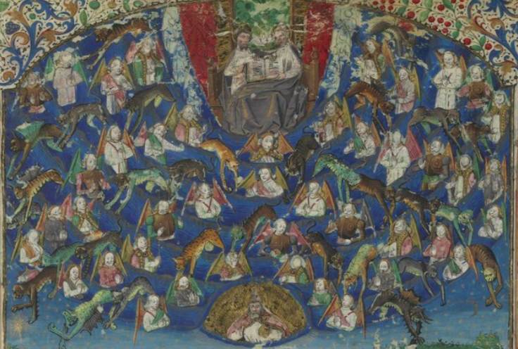

@@include('../../../fragments/header.html')
Présentation:
Chronique anonyme

Identification
- Auteur:
- Titre:
Datation & localisation
- Localisation: .
- Date de composition :
Analyse du texte
- Incipit:
- Incipit repère:
- Excipit:
Description
- Liste des témoins et lien vers la numérisation quand elle existe [mss]
- London, College of Arms, L 06
- Fiches codicologiques
- London, College of Arms, L 06
- Tables des rubriques
- Aucune rubrique
- Tables des enluminures
- Aucune enluminure
- Bibliographie
- Fiche bibliographique dans Jonas
- Bibliographie sur les manuscrits
@@include('@@webRoot/fragments/footer.html')